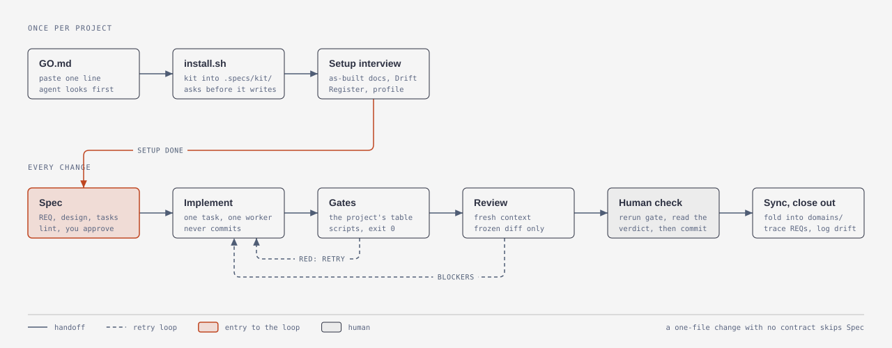
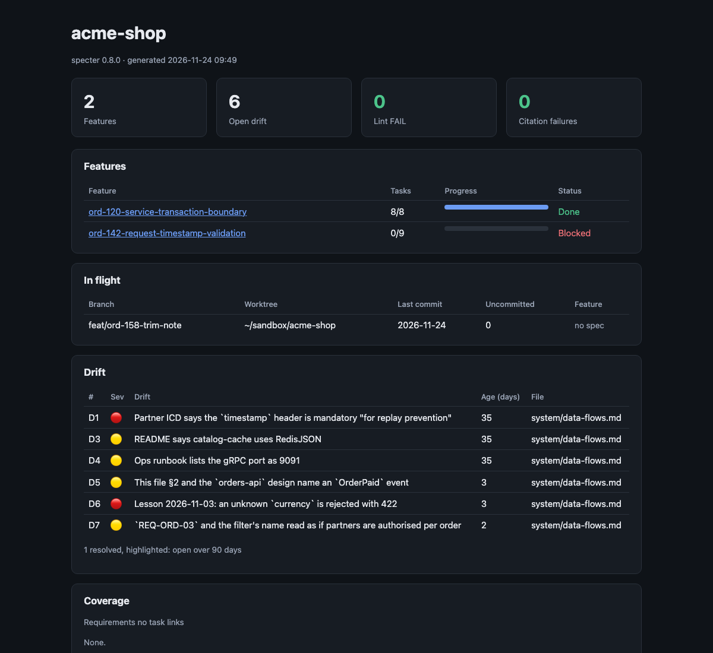
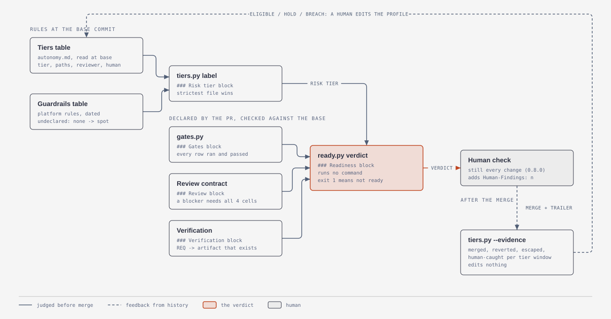
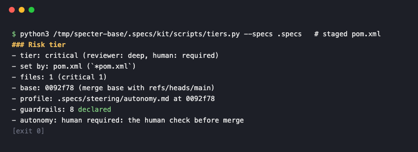
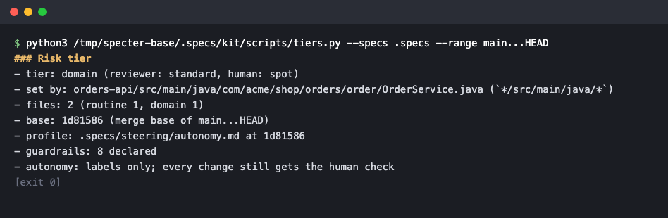
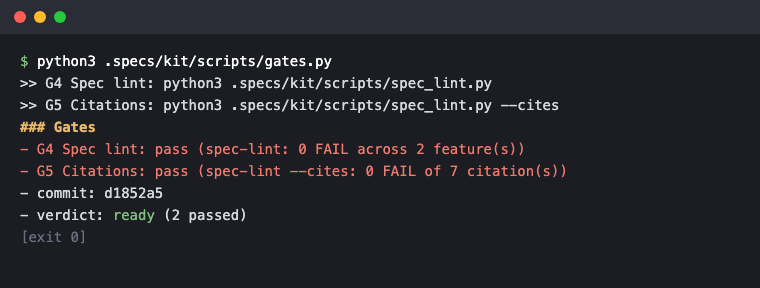
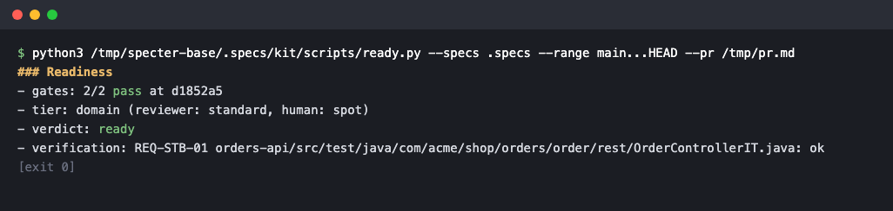
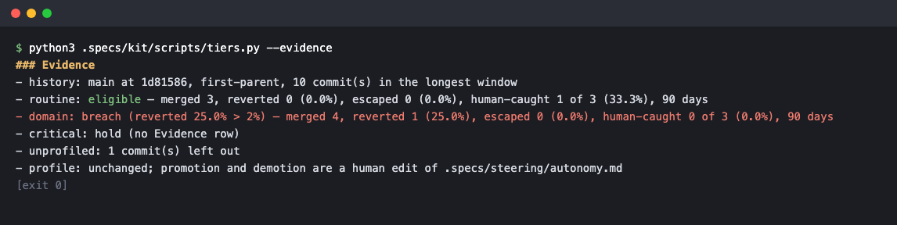
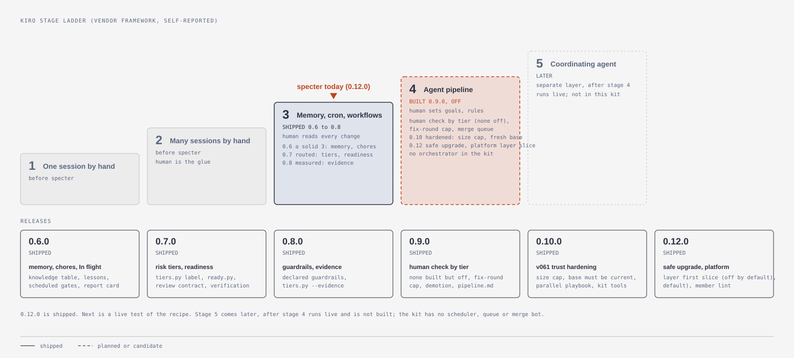

Specter · overview · November 2026
A spec-first workflow any AI coding agent can follow, and a trust layer that decides how much of each change a human still has to read.
Release 0.9.0 shipped · 0.10.0 in progress · Python 3.8+, stdlib only, no service
The problem

install.sh copies one folder into the project, .specs/kit/; teammates get it with the repo.
| Part | What it holds |
|---|---|
| AGENT_RULES.md, playbooks/ | setup, new-feature, next-task, sync, refresh |
| roles/ | planner (deep), generator (standard), reviewer (fresh context) |
| templates/ | requirements, design, tasks, steering files, the autonomy profile |
| scripts/ | spec_lint, spec_report, spec_sync_check, gates, tiers, ready |
| docs/ | spec-driven method, review loop, model routing, chores |
| adapters/ | Claude Code skill and agents, Cursor rule, AGENTS.md block |
spec_report.py writes .specs/report.html:
Real page, acme-shop example at release 0.8.0.


The Tiers table in autonomy.md maps paths to routine, domain and critical.


gates.py

Runs the project’s own Gates table and prints the block for the PR. A row that did not run is a failure, never invisible.
ready.py

Reads the PR text: the Gates block against the base’s table, the Review block, the Verification lines. It runs no command.
Review contract
Guardrails

merged, reverted, escaped (a later Fixes:), human-caught (Human-Findings:)
too few merges, a missing trailer or a shallow clone is a hold, never a pass
promotion and demotion stay a human edit of the profile

0.9.0 · shipped
| Piece | What it does | Status |
|---|---|---|
| Human check by tier | required as today; spot approves on the verdict, gates and tests; none only on the lowest tier, guardrails declared, evidence eligible | shipped |
| Platform recipe | required checks, auto-merge on green, CODEOWNERS, a merge queue; the kit merges nothing | shipped |
| Fix-round cap | two fix rounds per task, then the human gets both outputs; ready.py checks rounds: | shipped |
| Demotion on breach | --evidence prints the profile line to tighten; a human edits it | shipped |
| pipeline.md | triage, implement, review, merge: what each stage hands on and when the human enters | shipped |
0.10.0 · in progress
Every deep review of the trust layer found a way to reach none without a human. This release closes the known paths and makes new ones reportable.
Candidates · not decided
Not in the kit
The honest gap
off
the no-human setting: built in 0.9.0, kept off until it is verified on a live host
0
tiers with enough merged history to be eligible. A routine tier needs about 20 real merges carrying Human-Findings trailers.
Next: run the acme seed tasks in a hosted sandbox with a real merge queue and trailers on every merge.
git clone https://github.com/natsaros7/specter.git ~/tools/specter
python3 kit/scripts/spec_lint.py --specs examples/acme-shop/.specs --cites # passes
python3 kit/scripts/spec_lint.py --specs examples/cite-demo/.specs --cites # fails on purpose
In your project, open your agent and paste:
Follow ~/tools/specter/GO.md for this project.
It looks first, proposes, installs on your yes, then interviews you (about 20 minutes). Without AI: install.sh ~/code/my-project --dry-run.